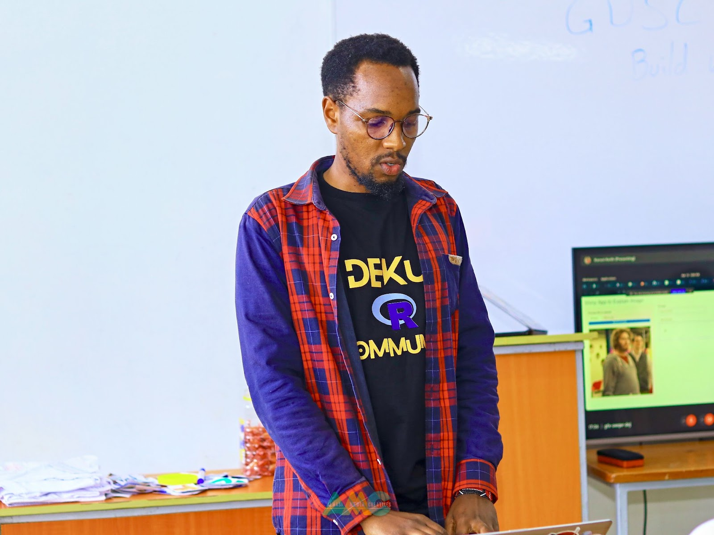
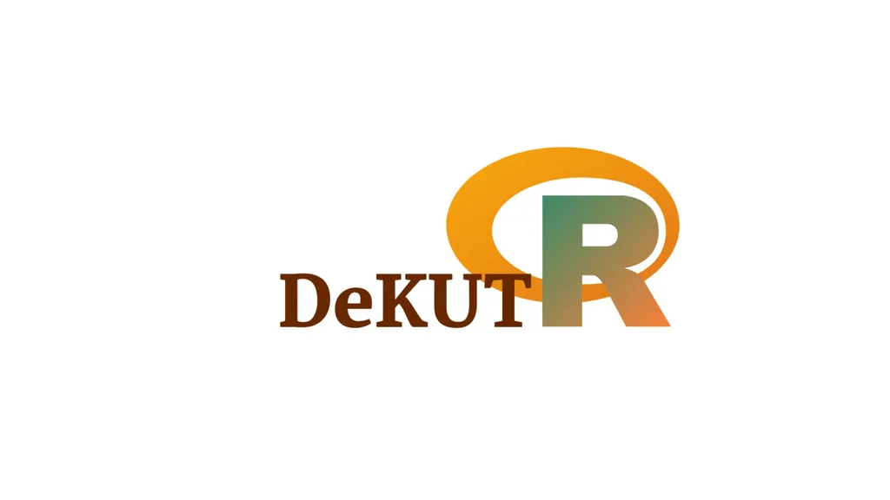

Keith Karani Wachira, the Dekut R Communityorganizer based in Nyeri, Kenya, was recently interviewed by the R Consortium and shared his journey in the R community, which began in 2019 during his university years. Sparked by a tech meetup, Keith’s interest grew through the pandemic sessions. Now in academia, he uses R to address business automation challenges, attracting industry professionals to his practical sessions. Excited by trends like AI integration and tools like Quarto, Keith foresees increased automation and efficiency. Outside work, he enjoys baseball, graphic design, web development, and teaching R, finding great reward in his students’ success.
Please share about your background and your involvement in the R Community. What is your level of experience with the R language?
I began my journey with R in early 2019 while studying at university. In May 2019, I learned about a tech community through a friend who posted in one of our school’s WhatsApp groups, inviting us to join a meetup. Curious, I decided to attend.
I remember the meetup was on a Saturday, and it turned out to be the launch of a new club. My friend invited me and was part of the Microsoft Learn Students’ Ambassadors. His classmates used R for their engineering projects, which sparked my interest.
During the first lesson, I found it challenging as there were about 30 students, most of whom were first-year students pursuing various degrees, including Business Information Technology, which I was majoring in, along with a minor in Communication. My first programming language that year was C, which I found interesting.
Over time, I found the R language interesting, especially its syntax. What fascinated me the most was how data could be used to create visualizations. This curiosity led me to explore data from my local sewerage and water company, using R to create informative visualizations and derive insights that can be used in decision making.
I continued attending the sessions in 2020 during the pandemic. Although we no longer had in-person classes, we adapted using Microsoft Teams for our meetings. Eric organized the meetups and arranged tech talks with speakers from Posit (formerly RStudio) and NairobiR. I remember attending these sessions and understanding how powerful R is.
.jpg)
Throughout 2020, I attended regularly but still lacked confidence in the language. However, in 2022, I made significant progress. Under Eric’s leadership, we expanded the community to involve more people, especially students from the department of Actuarial Science, Telecommunication Engineering and electrical engineering. We set up a structured learning environment based on materials from Hadley Wickham’s books and resources from the R website and blogs.
Eric’s leadership greatly influenced me. He taught us how to write blogs using Markdown and publish on RPubs. This is a bit about my background. Today, we continue to teach R, following a structured approach to help others intermediate in using the language.
What industry are you currently in? How do you use R in your work?
I’m currently in academia, primarily focusing on various technical challenges. We hold sessions where we demonstrate the use of R in robotics for members in Electrical Engineering and Telecommunication Engineering. For those in Actuarial Science, we show how to create time series models using R.
Coming from a background in business and information technology, I focus on solving business challenges, particularly automating business processes and addressing issues in banking, logistics, retail using opensource datasets. Our efforts are not limited to academia; we concentrate on applying R across different disciplines within academia to tackle these challenges.
Why do industry professionals come to your user group? What is the benefit of attending?
.jpg)
An interesting scenario arose when I became interested in EMS (Engineering and Management Systems). We started organizing hybrid sessions after the COVID period and it caught interest of students from another university in Kenya ,Egerton University. Through, statistical analysis bureau of Egerton University they joined our sessions to learn how to leverage tidy models packages to create machine learning models and also collaborate with the community members.
They were very interested, and as future economists, we demonstrated how to build and appreciate these models. In previous meetups, we also introduced participants to Shiny apps, teaching them how to host their models and create interfaces to display their work.

Another valuable skill we taught was generating reports using R Markdown. This allows users to write code, format text, add videos, images, and emojis, and present their work in a professional and engaging manner. Attendees found this particularly useful as it enhanced their ability to write, structure, and report code effectively.
Participants learned to leverage the R ecosystem for coding, structuring their work, and reporting their findings by attending our sessions.
.jpg)
What trends do you currently see in R language and your industry? Any trends you see developing in the near future?
A trend I’ve noticed is the widespread effort to include everyone in learning programming languages like R. This is evident in the emergence of specialized groups such as R for Medicine and R for Pharma. Two of our alumni even demonstrated how R can be used in robotics through a talk at Posit Conference 2022, demonstrating its applicability in specific industries. This specialization fascinates me, and I am eager to see how R will be used across various fields.
Another trend is using tools like Quarto, which facilitates the implementation of such specializations. Additionally, I am excited about the incorporation of AI in building R applications, such as using Gemini for Shiny apps. Although materials on this are currently limited, I see this as a growing trend.
The integration of AI will likely lead to the automation of many manual processes, further enhancing R’s utility and efficiency in various industries.
We would like to get to know you more personally. Can you please tell me about yourself? For example, your hobbies/interests or anything else you want to share.
.jpg)
When not in front of my laptop, I enjoy playing baseball and softball, especially as a catcher. Catching allows me to see the entire game command the play, and I enjoy throwing the ball from home to second base and picking off a runner. It’s a challenging position that helps me focus and improve my aim.
On the side, I also do some graphic design using Canva which I use to create posters and newsletters for our community meetups. Additionally, I have web development skills using MERN stack.
Another passion of mine is teaching R to others. I love seeing people learn and apply the concepts and then go on to teach others. One of my students from his first year has now taken over as a lead in our community, which is incredibly encouraging. He even competed in hackathons and finished fourth, showing how much he has grown.
Teaching and seeing others succeed is something I find very rewarding and motivating.
How do I Join?
R Consortium’s R User Group and Small Conference Support Program (RUGS) provides grants to help R groups organize, share information, and support each other worldwide. We have given grants over the past four years, encompassing over 68,000 members in 33 countries. We would like to include you! Cash grants and meetup.com accounts are awarded based on the intended use of the funds and the amount of money available to distribute.
gd2md-html: xyzzy Mon Jul 29 2024